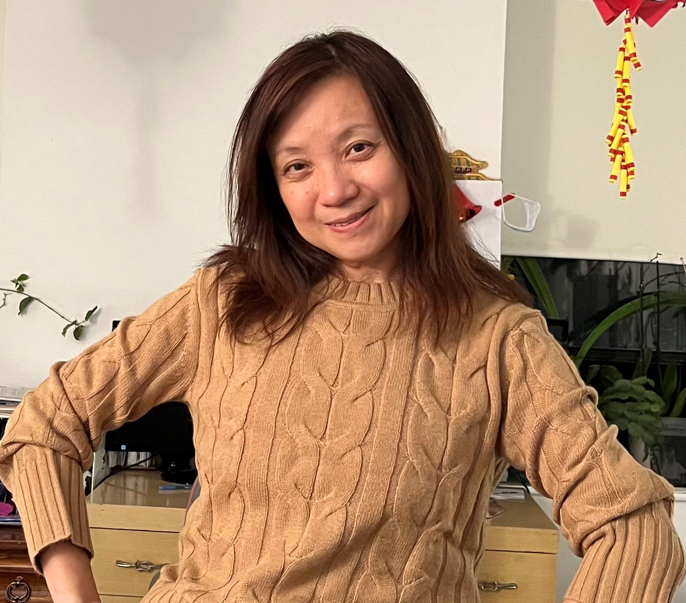
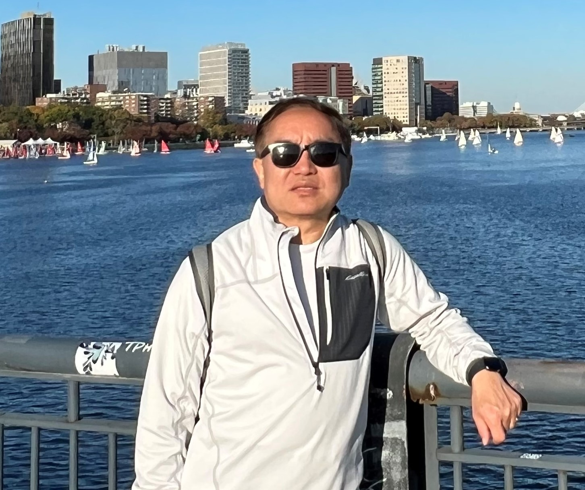
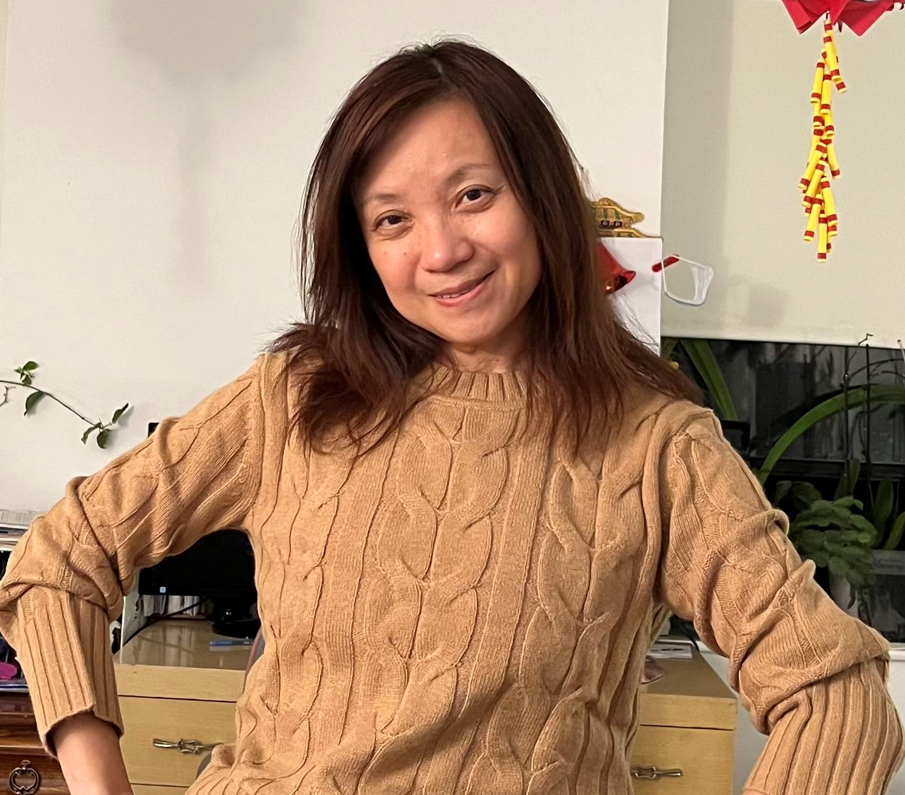
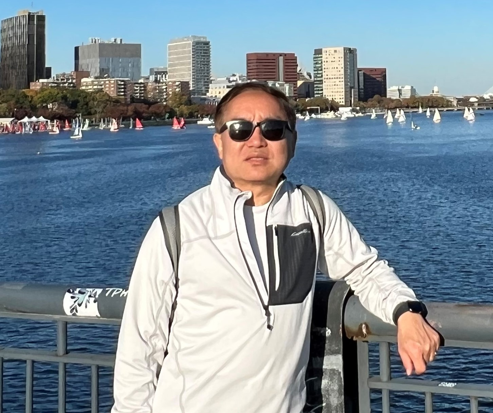
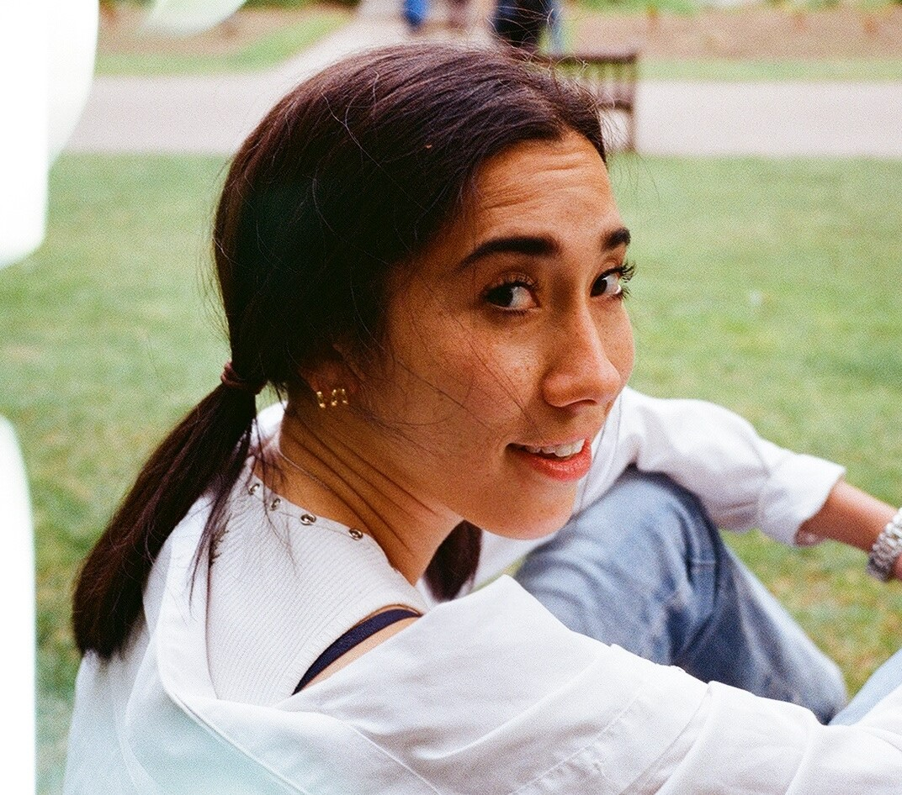
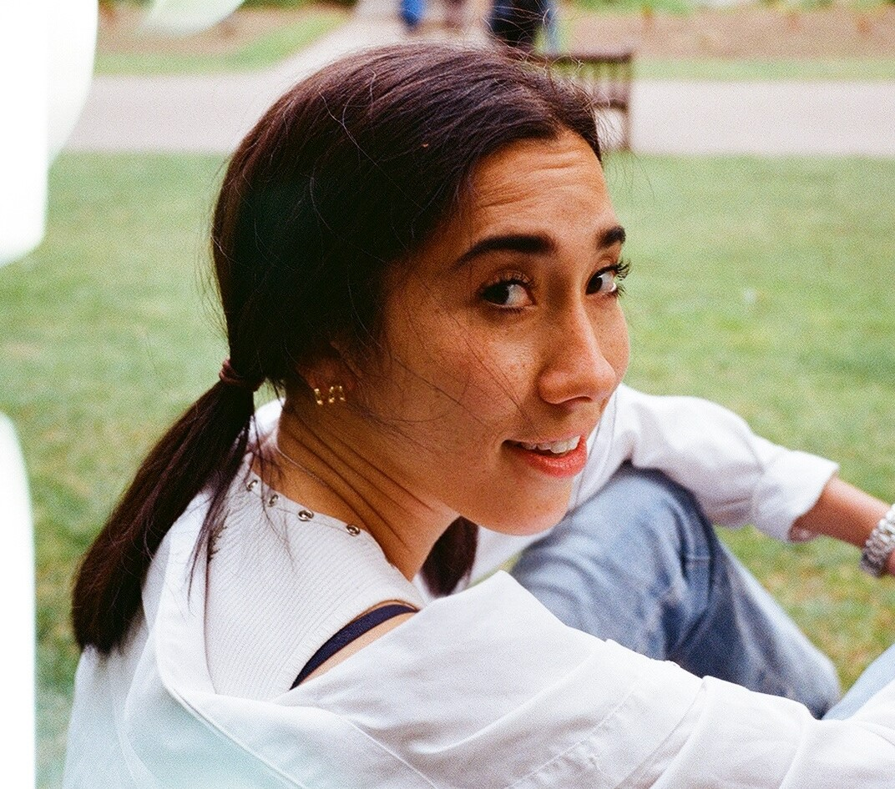

I was a very confident child. I didn't care about anyones opinions, ever. Doing the hobbies that made me feel happiest, being around people that made me feel the most comfortable, and expressing myself in whatever way felt most like Kate was the only way I knew how to live: I did me for me. I have my family to thank for that, for allowing me to explore who I wanted to be, what I wanted to do, and who I wanted to become without any limits.
My Grandma (we call Po Po) and Grandpa (we called Ye Ye) came from China to Boston, MA in 1997 when my older sister (Joy) was born. While my Mom (Yang) and Dad (Yingmu) worked their jobs in order to build the dream life for Joy and I, my grandparents raised us.
 




 >

>
